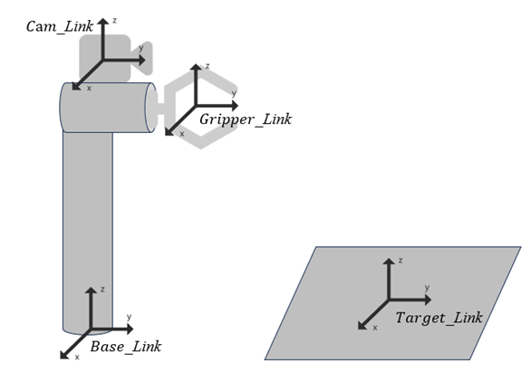

2.手眼标定
2.1 相关介绍
手眼标定的核心目标是确定相机与机械臂末端之间的位置关系，在Graspnet中我们获知了机械臂在相机坐标系中的目标位姿，在机械臂的控制上，目标位姿经常需要基坐标系下的目标位姿，这样便于机器人运动学的正逆解算，因此，我们需要确认相机与机械臂末端之间的位置关系，以高效快捷的控制机械臂达到末端姿态。
在手眼标定上，常根据相机的安装位置，区分出不同的标定方法与流程。从相机的安装位置上来区分，大致分为两个手眼系统，分别为眼在手上（Eye-in-Hand）与眼在手外（Eye-to-Hand），在进行手眼标定时，会根据手眼系统的不同，区分手眼标定的标定矩阵。眼在手上时，由于相机与机械臂末端的相对位置不变，需要标定相机坐标系与末端工具坐标系之间的平移向量与旋转矩阵；眼在手外时，由于相机与基坐标系之间的相对位置关系不变，需要标定相机坐标系与末端工具坐标系之间的平移向量与旋转矩阵。
2.2 眼在手上的标定方式

如果我们需要控制一个机械臂，通常会基于机械臂的基坐标系(base_link)进行控制，以这个base_link作为世界坐标系的原点，来表达一个物体的位姿或者任何一个位姿。而任何视觉的抓取网络，基于的坐标系都是相机坐标系(cam_link)，因此，无论怎么变化，我们都应该想办法将cam_link下的位姿，转换到base_link下的位姿。
如果学习了机器人学，并很好的掌握了正逆运动学解算，我们会很容易的获得工具坐标系(tool_link)与base_link之间的变换矩阵：
而抓取网络输出的也是cam_link到目标姿态的变换矩阵：
我们需要标定相机相对于哪个坐标系的量，才能获得一个永远不变的定值？答案显而易见，是cam与tool之间的位置关系，无论机械臂如何移动，这二者物理位置固定后，不会随着机械臂的关节角度变化而继续变化了。但如果是Eye_to_hand的话，则应该标定cam与base之间的位置关系了。
我们假定代求量为：
根据我们已经有的关系，应当建立一个公式，是这样的：
意味着代求量如果获得，就可以完美的控制机械臂到达相对与base_link下的位姿了，怎么求呢？在手眼标定时，我们会进行多组数据的测量，这里先假定为2组。
已知目标与机械臂的位置关系不会变化，那么就有这样的等式存在：
我们设代求量为X，末端到基座的关系为A ，相机到目标的关系为B，那么有：
进而可以推导：
以此类推，随着采集数据的增多，会获得越来越接近真值的代求量，我们获得了代求量，就获得了在base_link下的目标姿态。
同时，由于需要实现世界坐标系到像素坐标系的投影，我们需要完成世界坐标系到相机坐标系、相机坐标系到图像坐标系、图像坐标系到像素坐标系的标定，由于在投影时，只取决于相机出厂后定义好的参数，因此我们需要实现下式中对P的标定。
其中，P由一个内参矩阵与一个外参矩阵组成，其中外参矩阵的系数与相机的世界坐标有关，这一部分我们在手眼标定部分已经实现，因此只需要标定内参矩阵即可，它由焦距与光学中心组成，如式3-31所示，其中， , 为相机的焦距的横纵坐标； , 为相机的光学中心在接受面的横纵坐标。目前，常用到的标定方式为张正友标定法。